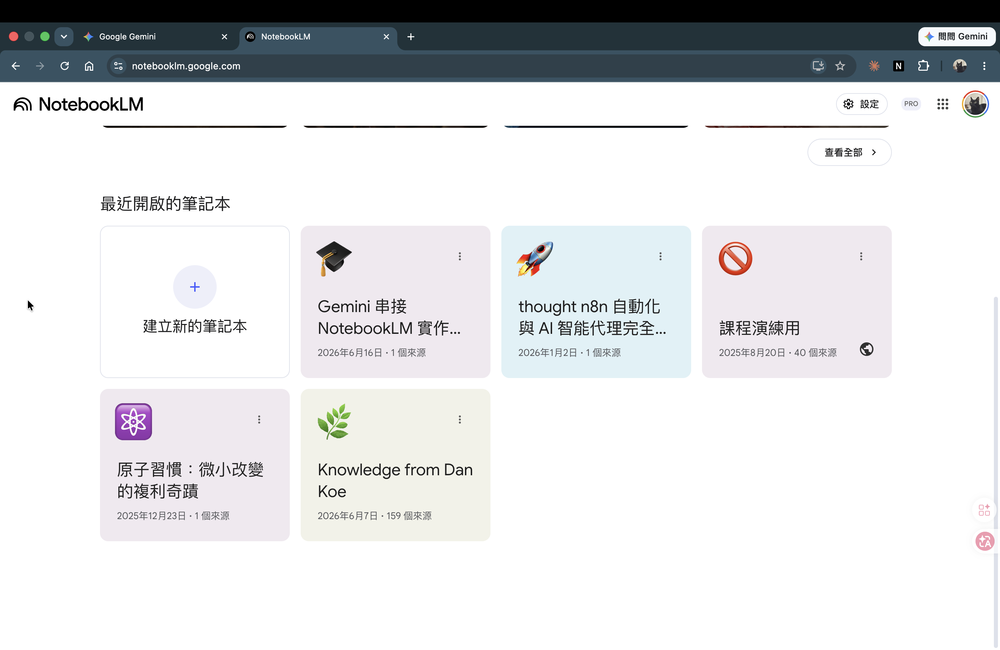
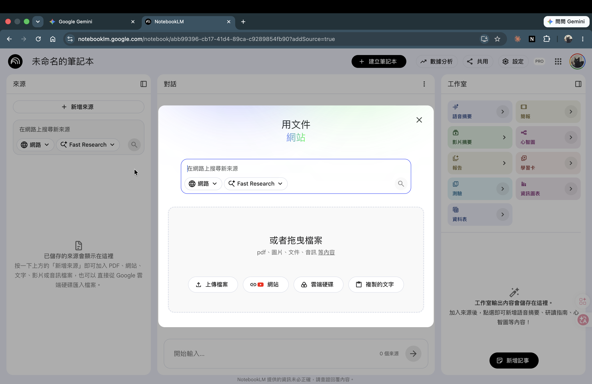

NotebookLM 個人知識庫建立
把你最常查的工作文件集中上傳，以後直接問問題、直接看引用在哪一頁。50 分鐘從零建好自己部門的第一個 notebook。
破題
5 部門都有這個問題：
| 部門 | 卡住的事 |
|---|---|
| 財務凱倫 | 月底要翻好幾份對帳規則和截止日期彙整，搜尋找不到就問同事 |
| 業務小李 | 客戶要問交期，要去找報價單和規格書，翻到一半不確定這份是不是最新的 |
| 電商怡君 | 促銷檔期 SOP、素材規格、審核流程表全部分散在不同資料夾 |
| 倉儲阿翔 | 廠商交貨規定、驗收標準、異常回報流程 — 每個廠商可能還不一樣 |
| 採購采蓁 | 每次要確認規格書，找到了又不確定有沒有更新版 |
今天這 50 分鐘解決這件事。
概念
什麼文件適合上傳
| 文件類型 | 說明 |
|---|---|
| 部門 SOP | 操作流程、步驟說明、負責人 |
| 政策文件 | 公司內部規定、審核標準、例外條款 |
| 會議紀錄 | 重要決議、待辦事項、時程承諾 |
| 產品 / 商品規格書 | 規格數字、驗收條件、材質要求 |
| 歷史報告 | 季報、月報、盤點結果（方便回頭查數據） |
電商部_促銷SOP_2026）；「維護」——文件改版就換掉舊的（留新版、刪舊版）；一個 notebook 放「同一個主題」的文件，主題內有幾份放幾份（免費版上限約 50 份）。查不準通常不是份數多，是把不相關主題混在一起。5 部門各自的例子：
| 部門 | 適合放進知識庫的文件（3 個） |
|---|---|
| 電商（怡君） | 促銷檔期操作 SOP、商品素材規格表、下架審核流程 |
| 財務（凱倫） | 每月對帳作業時程表、費用申請規定、稅務申報 checklist |
| 業務（小李） | 報價規則與交期說明、客戶等級信用條件、月報填寫格式 |
| 倉儲（阿翔） | 廠商驗收標準、異常回報 SOP、庫存盤點作業流程 |
| 採購（采蓁） | 商品規格書（主力品項）、供應商評鑑標準、請購與核決流程 |
什麼文件不適合上傳
這不是「注意資安」四個字可以帶過的事，直接說清楚：
命名與分庫建議
Notebook 命名原則：讓一個月後的自己找得到。
| 不好的命名 | 好的命名 |
|---|---|
| 我的資料 | 電商部_促銷與上架規範_2026 |
| 工作文件 | 財務_月結作業與費用規定_2026Q2 |
| NotebookLM | 業務_報價與客戶條件查詢庫 |
放幾份？看「主題」，不是看數量：一個 notebook 放同一個主題的文件——同主題有 3 份就放 3 份、有 30 份就放 30 份，都查得準，因為引用都來自同一個主題。
- 真正「查不準」的原因不是份數多，是主題混：把財務、倉儲、客戶資料塞同一個 notebook，一個問題引用到 6 份不同部門文件，看不完也分不清——這才是要避免的。
- 行政文件很多也沒關係：請假、報銷、差勤、出納……只要是「同一類、會一起查」的，放一個 notebook 沒問題。上限是免費版一個 notebook 約 50 份。
- 什麼時候該拆？當一個 notebook 開始混進「明顯不同主題」，或接近 50 份時，按子主題拆兩個（例：「請假差勤規定」「報銷費用規定」各一個）。
- 怕「到處找筆記」？反過來想：notebook 拆得太碎、太多才會找不到。一個主題一個 notebook，你永遠知道該開哪一個。
操作示範
POV：怡君（29 歲電商營運經理，弄一下精選商行）。手上有 5 份文件長期找不到：電商部促銷操作 SOP、商品上架審核流程、素材規格說明、社群活動文案庫、一份 2025 年下半年的促銷檔期總結報告（含各檔期社群成效）。現在把這 5 份整進一個 notebook，以後直接在裡面查。建知識庫查文件不是電商專屬——行政、總務、各部門每天都在做同一件事。
ecom-material-spec.pdf（素材規格）
ecom-social-copy.pdf（社群文案庫）
ecom-2025h2-report.pdf（促銷檔期總結）
開始前先認畫面：NotebookLM 進到一個 notebook 後，畫面分成三塊，先對上名字再操作：
步驟一：建立新的筆記本（New notebook）

步驟二：上傳文件
點「新增來源（Add source）」（在畫面左側來源欄位的上方，第一次進空白筆記本時通常會直接彈出上傳視窗），選擇上傳方式：
- 上傳檔案（Upload file）：從電腦選 PDF / Word / txt
- Google Drive：直接連結雲端硬碟的文件
- 貼上文字：沒有實體檔案、直接貼文字內容也可以
怡君上傳 5 份文件（含社群活動文案庫這份偏行銷的素材），上傳完成後左側來源欄位會列出 5 個檔名。

中文文件無問題，但斷行很多的舊格式 Word 偶爾解析會稍差。
每份文件上傳後稍等幾秒，出現在來源列表才算成功。
步驟三：先示範問 4 題（3 題查單檔 + 1 題跨文件綜合）
文件上傳好，直接在畫面正中央的 對話欄（輸入框在最下方）打字問問題。這裡先帶你看 4 題怎麼問、怎麼確認引用（前 3 題查單一文件、第 4 題跨文件綜合）；等下換你動手時，自己問滿 5 題，其中至少 1 題要像第 4 題那樣跨文件綜合。
依照商品上架審核流程（上架審核流程_v3.pdf），最後一關審核由電商部主管簽核，確認促銷定價與活動頁設計符合規定後，才可交給技術組執行上架。[1]
若主管不在場，代理簽核人為電商部副理。[1]
重點動作：點 [1] 引用標記，確認跳到原文的「最後一關審核」那段。每次用都要養成這個習慣——這是讓你不會拿到錯誤答案又不知道的關鍵步驟。

依素材規格說明（素材規格_2026.pdf），素材交稿截止時間為上架前 3 個工作日，逾期將順延該檔期上架時間。[2]
依 2025 年下半年促銷檔期總結報告（2025H2_促銷總結.pdf），雙十一檔期的社群觸及最高（132 萬），轉換率 4.6% 也是全檔最高，整體成效超標。[3]
依社群活動文案庫（社群文案庫_2025.pdf），雙十一的主打文案為「一年一度 囤貨就趁現在」。[4]
整理你雙十一上架的時程與關卡：
· 素材：上架前 3 個工作日要完成交稿，逾期會順延上架。[1]（素材規格_2026.pdf）
· 審核：上架前要過三關簽核——① 企劃組長內容初審 → ② 行銷主任覆核售價與毛利（毛利率不得低於 18%）→ ③ 電商部主管簽核。[2]（促銷SOP_2026.pdf）
· 上架後：正式上架後 30 分鐘內完成前台檢查（連結、價格、加入購物車）。[2]
示範重點：前 3 題是「查一份文件」（CH1-1 教過的基本功）；第 4 題是「跨多份文件綜合」——這才是建知識庫的真正理由。四題全部有引用、全部對得回原文。等下換你動手：問滿 5 題，其中至少 1 題要像第 4 題那樣「單一文件答不出來、得綜合 2 份以上」的。
動手
換你建立自己部門的個人知識庫。
準備材料：
- 主要用：用課程提供的部門演練文件（挑你的部門那組，下方可下載）
- 自備為備案：若想用自己部門的常用工作文件（課前提醒已說明），也可替代
上傳前先做這 3 件
回家用不起來，常常不是不會問，是素材太亂——檔名看不懂、什麼都塞同一個 notebook、上傳完不知道要問什麼。先把這 3 件做好（每件都有具體做法）：
換你做一次：填好下面的規劃，然後照你填的第 1 個問題，實際在 NotebookLM 問一次，把回答裡的 1 句引用和它的檔名貼進最後一格——這樣你就確認了：你的知識庫真的查得到、而且答案有出處。
業務（小李）：sales-pricing-rules.pdf、sales-customer-grade.pdf、sales-report-format.pdf
倉儲（阿翔）：warehouse-acceptance-std.pdf、warehouse-inventory-sop.pdf、warehouse-delivery-tolerance.pdf
採購（采蓁）：procurement-spec-main.pdf、procurement-approval-flow.pdf、procurement-vendor-eval.pdf
電商（怡君）：ecom-sop-promotion.pdf、ecom-material-spec.pdf、ecom-social-copy.pdf、ecom-2025h2-report.pdf
操作步驟（5 步）：
自我檢查：問完看引用——如果答案只引用到 1 份文件，代表你的問題還是「單一文件題」，換個更綜合的問法再問一次。
各部門示範查詢題（不知道要問什麼？先從下表挑一題練）：
| 部門 | 查單一文件（前 4 題隨意挑） | 跨文件綜合（第 5 題挑這種 · 要 2 份以上） |
|---|---|---|
| 電商（怡君） | 最後一關審核是誰？／素材交稿幾天前？／上季哪個品項最差？ | 這檔毛利率只有 16%，依規定能不能上架、會卡在哪一關？ （毛利門檻＋審核流程兩份） |
| 財務（凱倫） | 核決金額上限多少？／月結截止幾號？／稅申報要哪些文件？ | 一筆 30 萬的費用要這個月入帳，誰核決、最晚哪天要送出？ （核決權限＋月結時程兩份） |
| 業務（小李） | D 等客戶交期條件？／報價有效幾天？／業績算哪個口徑？ | 一個信用 D 等的客戶要下單，報價有效期和付款條件各是什麼？ （客戶等級＋報價規則兩份） |
| 倉儲（阿翔） | 驗收不合格怎麼回報？／盤點多久一次？／短超交容許多少？ | 一批貨短交 8%、又有 2 件不合格，各要走哪個流程？ （短交容許＋驗收回報兩份） |
| 採購（采蓁） | 規格書公差多少？／核決哪層要會簽財務？／評鑑及格幾分？ | 一個評鑑 65 分的供應商、這次請購 30 萬，要怎麼處理、誰核決？ （評鑑標準＋核決流程兩份） |
文件上傳失敗 → 確認 PDF 可選取文字，或改用複製文字貼入
問不到答案 → 確認文件有成功列在來源欄位，再重問一次
引用標記沒有出現 → 換一個問法（更具體，帶上文件裡可能出現的關鍵詞）
驗收
對照下方驗收清單，5 項打勾才算完成本單元：
練習文件下載
需要的帳號：NotebookLM 免費版（Google 帳號登入即可）——用來建 notebook、上傳文件、查詢引用。課程提供全班統一的演練文件（下方可下載）；你也可以自備 3–5 份部門工作文件（PDF / Word / 純文字皆可）來練。
課程提供的演練文件（電商示範版 4 份 + 其餘 4 部門各 3 份，共 16 份）——挑你部門的下載：
下次上課前，請先準備：
✓ PDF 或 Word 格式
✓ 文件內容是你自己部門的 SOP、規定或報告
✓ 不含客戶個資、薪資資訊或高度機密合約
若沒有合適的文件也沒關係，上面的 16 份範例文件可以直接拿來練。
常見錯誤 3 條（Common Pitfalls）
檢核題 2 條（Quiz）
顯示答案
B：含客戶個資（姓名 + 電話 + 訂單組合 = 個資法規範）
D：高度機密合約，含競爭敏感資訊（單價、折扣、獨家條款）
F：薪資資訊屬敏感人事資料，未公告前不應上傳至第三方平台
A、C、E 都是一般工作文件，不含個資或高度機密商業條件，適合上傳。
NotebookLM 回了這個答案：
依異常回報 SOP，短交情形須在收貨當日由倉儲人員填寫短交回報單，並於 24 小時內通知採購部確認後續補貨安排。[1][3]
短交數量超過訂單數 10% 者，需同步通知業務部門評估對客戶出貨的影響。[3]
阿翔下一步應該做什麼？他要怎麼確認「24 小時內通知」這個規定是真的在文件裡寫的？
預期答案要點
1. 點 [1] 引用標記，確認「24 小時內通知採購部」這條規定對應到異常回報 SOP 的哪個段落。
2. 點 [3] 引用標記，確認「超過 10%」的門檻也在文件裡有明確寫出，不是 NotebookLM 補充的。
3. 如果引用跳出去的段落確實包含這些數字，這個回答可以用；如果段落裡沒有「24 小時」這個字，要懷疑這個數字是 NotebookLM 從上下文推論的。
關鍵判斷原則：引用標記點下去、原文有這個詞 → 可以用；原文裡沒有這個詞 → 不要直接拿這個數字去跟廠商說，要回頭查原始文件。